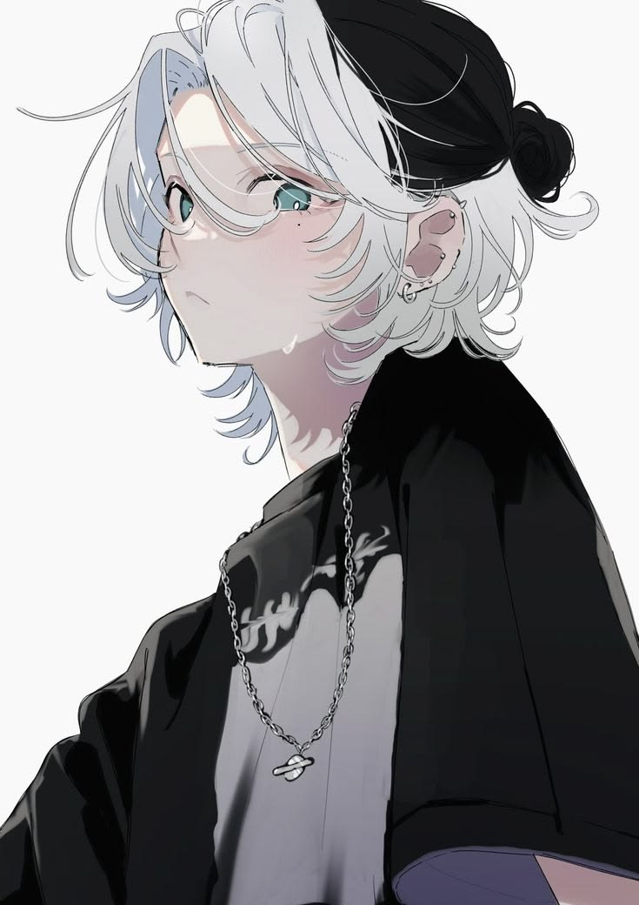
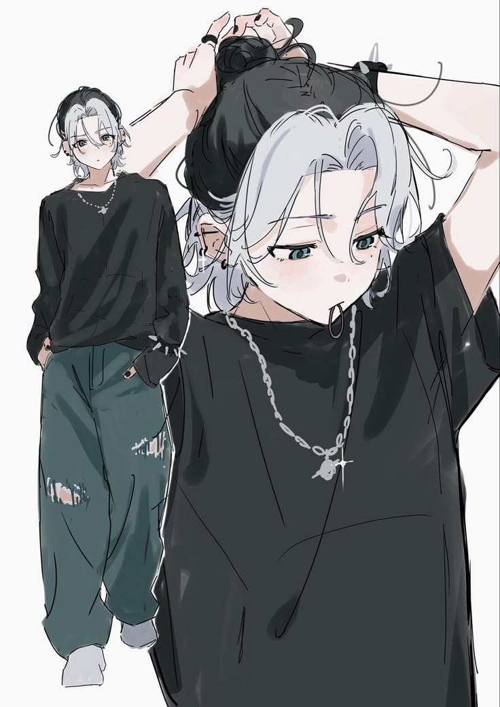

Aparências

Skylar (aka Kai) é um garoto de pele clara, cabelo longo pouco abaixo do ombro, olhos azuis-esverdeados e piercings na orelha, sombrancelha, língua e nariz, além de um colar e uma pulseira punk em seu braço direito, apesar de ter outra para usar em seu esquerdo às vezes. Ele usa roupas largas, como moletons, e calças cargo, com alguns rasgos estéticos. Para combinar com sua irmã Louise, ele pinta sua franja, sombrancelha e a parte de trás de seu cabelo, que fazem um bom contraste com o cabelo longo e escuro.
